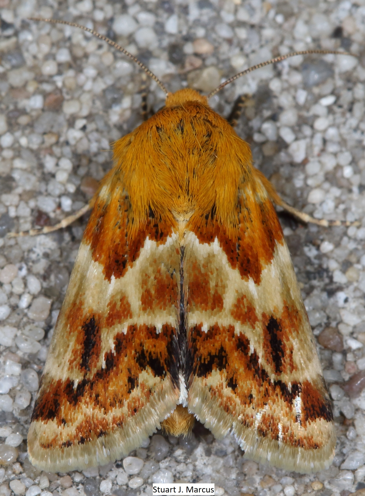

Monday 01-23-2023

Monday 02-27-2023


Presentation Description: It is estimated that there are over 1 billion insects for every human on this planet! Have you ever wondered just what they are all doing here, and why we have to deal with them? Let's face it -- the numerous services that beneficial insects provide to us are often overshadowed by the annoyances caused by "pesty" species. In this talk you will gain an appreciation for some of the unsung heroes of the insect world such as dung beetles, ants, lacewings, and parasitoid wasps as we discuss their biology, roles in ecosystems, and their benefits to humans. We will also look at some of the recent studies that have led to headlines proclaiming that we are in the midst of an "insect apocalypse," as well as how our everyday actions can help these critically important organisms. Bio of Yourself: Jessica Beckham is an Associate Professor of Instruction in the Integrative Biology department at the University of Texas at San Antonio; there she teaches entomology and zoology courses, primarily for environmental science majors. Her background includes broad training in entomology with a focus on the conservation of native Texas bumble bees. She is also a proponent of making science accessible to all through citizen science initiatives and is an active member of the iNaturalist community.


Description: The common ancestor of all insects was almost certainly terrestrial, and in terms of diversity, insects are one of the most successful lineages on land. Some insects, though, abandoned their land-lubber kin and have adapted to living in water. In this talk, we will explore the diversity of insects (including Lepidoptera!) and other arthropods that live in water and some of the adaptations resulting from this transition. Bio: Robby got his PhD at UT Austin studying aquatic insect communities. He worked briefly for the Texas Commission on Environmental Quality identifying macroinvertebrates from streams. He is currently an environmental specialist with the North Carolina Department of Environmental Quality. He is interested in the natural history of pretty much everything--especially insects, herps, and plants, and he enjoys hiking and macro photography.


Monday 01-24-2022
Description: The talk covers a wide range of topics, from what makes the tropics the tropics, different tropical habitats/biomes, interesting plants and plant-plant relationships, pollination modalities, various vertebrate animal groups, a rather long section on insect defenses against predation, insects and what they eat, insect attraction to lights, and a short section on deforestation and sustainable practices in the tropics.
Dr. James Adams
[Modified] Bio: James Adams is a Lepidopterist and Professor of Biology (1990-present ), Dalton State College, Dalton, Georgia. He was born 1960, Smithville, Missouri and has three degrees: B.S. (1983), M.Phil. (1987), Ph.D. (1990), all from Univ. of Kansas. James is a specialist in “Macro” lepidoptera (esp. Noctuoidea), of Georgia and Kansas and has amassed a collection of 60,000+ prepared specimens. He has published on the butterfly biodiversity on Sapelo Island, a barrier island of Georgia and co-authored the description of a new species of moth from there as well as a new moth species from northern Arizona and southeastern Utah. He is a co-author of a chapter on Superfamily Zygaenoidea in Moth
Monday 2-28-2022
Description: GBIF, the Global Biodiversity Information Facility, is the global umbrella group for online biota locality data including Texas beetle data. GBIF is growing exponentially, driven in large part due to the exponential growth of data coming from iNaturalist. Also contributing to GBIF are copious amounts of specimen data, particularly from the Texas A&M University Insect Collection (TAMUIC) and from BugGuide. I will discuss the growth and ramifications of the availability of Texas beetle data.
Mike Quinn has been a board member of the Austin Butterfly Forum for over 20 yrs and has been studying beetles for nearly 30 years in close association with Ed Riley, the foremost authority on Texas beetles.


Butterflies don't just flutter, and birds don't merely flap. They also hover, glide, soar, burst, stoop and perform a remarkable suite of additional flight styles, all in accordance with their sizes, shapes, and situations. Join me for an explanation of bird and butterfly flight that will focus on the different "modes" that these animals use while in the air. I promise to go easy on the physics, and also to give you some tips that might enhance your wildlife viewing experience, and encourage you to make more use of that slow-motion setting on your camera or smartphone. Bio:John Acorn is a biologist and naturalist, and he teaches at the University of Alberta. John has been a lifelong resident of Edmonton, and he is best known for his television series Acorn, The Nature Nut, and as the author of some twenty books on natural history subjects.


Dinumma Deponens Moth
Dinumma Deponens Moth


Dinumma Deponens Moth
Our first Austin Butterfly Forum Field Trip in over a year! - Come Join US
Commons Ford Metropolitan Park (https://txmn.org/centralplaces/commons-ford-ranch-metropolitan-park/) 614 N Commons Ford Rd, Austin Sunday, May 30, 2021 9 - 12 am Free of charge
Monday 02-22-2021
Since 2011 I have been working with volunteers and Cuban scientists to explore Cuba's extraordinary natural areas, document flora and fauna, and assess the conservation needs of the rarest butterflies. Cuba has some plant communities that are similar to those in South Florida including mangrove swamps, freshwater marshes, and dry tropical forests, but others have no equivalent such as savannas, scrubs, and pinelands on serpentine soils, moist tropical forests in the mountains, and arid, rocky shrublands. The island is one of the world's biodiversity hotspots with many endemic plants and animals. At least 210 different kinds of butterflies have been reported from Cuba and about 40% are unique to the island. Butterflies are often good at dispersing and there is exchange with Mexico, Hispaniola, south Florida, and other widely separated places. This presentation will give an overview of Cuban culture, landscapes, and biodiversity.
Dr. Marc Minno-Bio
Dr. Minno has a Ph.D. in zoology and more than 30 years of professional experience as an interdisciplinary scientist. He is currently a Water Resource Coordinator with the Suwannee River Water Management District in Live Oak, Florida. Marc and Maria Minno also work on plant and butterfly projects throughout Florida via Eco-Cognizant, Inc., their home-based consulting business. In addition to his many years of experience with wetlands, Dr. Minno is keenly interested in conservation biology and has conducted field research throughout the US and in Central America, South America, Caribbean, Europe, and India. Since 2011 Dr. Minno has been working with biologists in Cuba to better understand the ecological relationships of imperiled butterflies in southern Florida. He has authored/ coauthored six books and six book chapters on butterflies and plants.
The National Butterfly Center is leading the charge to learn more about Manfreda and the critically imperiled butterfly that needs it to survive. Citizen scientists are needed to help with the first phase of this conservation project, upon which we hope to build a comeback for this rare, native host plant and its "ghost," the Manfreda Giant-Skipper. Bio: Marianna T. Wright is a passionate advocate for Texas' natural treasures. As executive director of the National Butterfly Center, she is leading the charge to protect and preserve the creatures and features that make South Texas so special.
Her book is titled A Photographic Field Guide to the Butterflies in the Kansas City Region. It is available for purchase on the following website link: click here to purchase book.
Betsy Betros Bio: Graduated from Colorado State University with a B.S. in Entomology in 1976.
Note: This discussion will look at the process of writing her book on Butterflies of the Kansas City Region and then into working on an inventory of bugs and spiders on her 5 acres.
Note: This Month we have an Open Show and Tell with our ABF and Facebook Members
An Interview with @greglasley from iNaturalist on Vimeo.
Greg Lasley

Greg Lasley

Thaumatotibia Sex Scales
Crocidosema Sex Scales
Salvador Vitanza
Grants Hercules Bettle Eggs
lecture on butterflys by example smith t. phd
2/20/2020
Butterflys are flying insects with colorful wings. They taste terrible and have a habit of mass migration.
monday 2-24-2020
Aug. 24, 2020, 7 PM meeting: Insect declines: Current Research in the Appalachians & a Roadmap Moving Forward, presented by Graham Montgomery.
Insect declines have become an important topic over the last few years, for good reason. Insects are such a key component of virtually all terrestrial ecosystems that downward trends in insect biomass and abundance are concerning to say the least. I'll touch on the current state of insect decline research, our efforts to standardize insect monitoring, and my ongoing research in Great Smoky Mountains National Park using historical insect and bird surveys originally conducted by the early ecologist, Robert Whittaker.
I am a PhD student in Dr. Morgan Tingley's lab at UCLA, studying insect declines and their effects on insectivorous birds. I grew up in Houston, went to Cornell University where I majored in entomology, did biological field work for 3 years before starting graduate school. My PhD research focuses on using historical data as a baseline to better understand the drivers and consequences of insect declines, and I am currently doing insect and bird resurveys in Great Smoky Mountains National Park, among other projects. When I'm not in the lab or field, I enjoy macrophotography, playing basketball, and kayaking.
Abbott's sphinx moth caterpillar, photo by Graham Montgomery

sep. 28, 2020, 7 PM meeting: John and Kendra Abbott will introduce their new book, Common Insects of Texas and Surrounding States that is to be released in October. They will talk about the layout and contents as well as the process for creating this book that contains 1,300 species and more than 2,700 photographs
Thanks to its size and geographic position, Texas is home to nearly 30,000 species of insects, likely making its insect population the most diverse in the nation. Ranging from eastern and western to temperate and tropical species, this vast array of insects can be difficult to identify. In Common Insects of Texas and Surrounding States, John and Kendra Abbott have created the state's most comprehensive field guide to help readers recognize and understand these fascinating creatures.
John and Kendra are professional nature photographers, educators and outdoor enthusiasts based in Tuscaloosa, AL. John is the Chief Curator and Director of Research and Collections for The University of Alabama Museums and Kendra is a Research Scientist in the Department of Biology..

October 26, 2020, 7 PM Meeting: "Butterflies of Nuevo Leon, Mexico" by Alida Madero Farias
Picture of Carousing Jewelmark - a subject of Alida Madero Farias work
October's presentation will be given by butterfly experts Alida and Lucy from Monterrey, México. They will provide an overview of Mexico as a biodiverse country, with an emphasis on Nuevo Leon and its butterfly hotspots such as Picachos, Chipinque, and Estanzuela. They will discuss the history of area butterfly counts and multiple field guides that they co-authored. Included will be a discussion of butterflies among ancient Mexican cultures as well as how the current pandemic is affecting México.
--

Show and Tell
Every November we have had a Show and Tell meeting where members or guests have about 10 minutes to show their best or most memorable photos from the past year. This pandemic year has forced us to have online Zoom meeings. We will continue to have the show and tell format but we wil have to do it via zoom.

lecture on butterflys by example smith t. phd
2-24-2020
Butterflys are flying insects with colorful wings. They taste terrible and have a habit of mass migration.
monday 2-24-2020
lecture on butterflys by example smith t. phd
2/20/2020
Butterflys are flying insects with colorful wings. They taste terrible and have a habit of mass migration.
monday 2-24-2020
lecture on butterflys by example smith t. phd
2/20/2020
Butterflys are flying insects with colorful wings. They taste terrible and have a habit of mass migration.
monday 2-24-2020
lecture on butterflys by example smith t. phd
2/20/2020
Butterflys are flying insects with colorful wings. They taste terrible and have a habit of mass migration.
monday 2-24-2020
lecture on butterflys by example smith t. phd
2/20/2020
Butterflys are flying insects with colorful wings. They taste terrible and have a habit of mass migration.
monday 2-24-2020